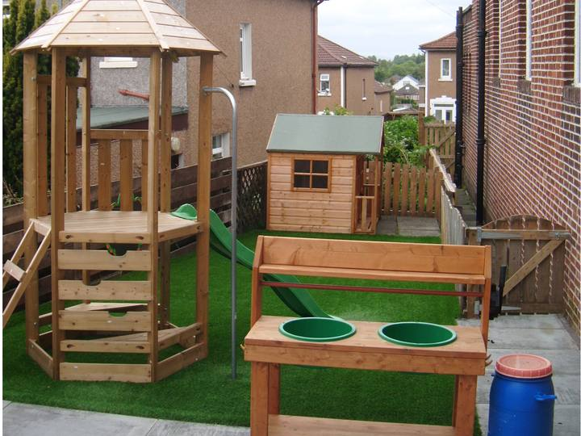

Our nursery
A small nursery in the halls of Williamwood Parish Church, run as a charity by parents. We have been here since 1975.
Our halls and garden
We use both halls and the garden every day.
- A large hall Where children spend most of the day, with planned activities across the curriculum.
- A small hall For some adult-led activities, and for pre-school children working on skills with their key worker.
- Our own garden With a climbing frame, a playhouse, a mud kitchen and a sandpit.
- A kitchen, a toilet and an office for private chats
We change the toys and equipment every week, or when the children ask.
We aim to take the children outside every day, so dress them for Scottish weather.

A day at nursery
Children learn through play, planned around each child's interests and stage. They come for at least 2 sessions a week.
- 9am
Doors open
Come into the hall with your child and say goodbye. There is a sink in the foyer if hands need a wash. Children play until welcome time.
- 9:30am
Welcome time
Children join their key worker's group for a welcome song and the register. They count who is here, talk about our Golden Rules and plan the day.
- From 9:30am
Play in the big hall and the garden
Most of the day is active play. Staff play with children one to one and in small groups.
- 10am to 10:45am
Snack, then tooth brushing
Children choose when to have snack in this time. They brush their teeth after snack.
- Midday
Morning children go home
Collect from 11:40am, and by midday. Afternoon children arrive at midday.
- 12:30pm
Hot lunch
Children eat together at the table, with staff.
- 3pm
Home time
Wait at the playroom door. Staff call each child and hand them over to you.
Food and allergies
Our cook plans the meals and snacks, following Scotland's nutrition guidance for nurseries, Setting the Table.
What children eat
- Snack Milk or water, a choice of fruit, then toast, crackers, oatcakes or similar.
- Hot lunch at 12:30pm Free for children using funded hours. Included in the fee for other children.
- Water Fresh drinking water all day. Children can ask for it any time.
- Milk Fresh whole milk, or a milk alternative.
We send the menu out in advance. You can send a packed lunch if your child doesn't fancy that day's menu. Please add an ice pack, as we can't keep lunch boxes in the fridge.
Allergies and special diets
How we handle allergies and diets
At your first visit, we ask about allergies, intolerances, and cultural, religious or other food needs. Every member of staff is told.
For a severe allergy, we arrange a meeting with you and our cook.
Children don't share or swap food, to protect children with allergies.
All our staff have food hygiene certificates and are trained in first aid.
Nappies, teeth and health
-
Nappies and toilet training
Your child doesn't need to be toilet trained. We change nappies. Please bring nappies, wipes and bags.
-
Teeth and eyes
We take part in Childsmile tooth brushing, and in vision screening (eye checks) for pre-school children. We explain both at your first visit.
-
Illness and medicines
Keep your child at home for 48 hours after sickness or diarrhoea. We give medicines only with a plan you sign.
Read what to do if your child is ill
Additional support
We support children with additional needs, for a short time or for longer.
We meet with you
We hold a first meeting with you, then follow-up meetings when they help.
We bring in other services if needed
For example speech and language therapy, educational psychology or occupational therapy.
We keep you informed
We keep you up to date at every step, and treat your child's needs in confidence.
Talk to us any time
If you're worried about your child, speak to us at drop-off or pick-up, or phone or email. We can usually meet you the same day.
Our inspection grades
The Care Inspectorate inspects every nursery in Scotland. Here is every grade from our latest report.
Grades go from 1 (unsatisfactory) to 6 (excellent). A 4 means good and a 5 means very good.
Because we offer funded hours, Education Scotland's inspectors can visit us too.
Care Inspectorate grades
Inspected 5 March 2026. Report published 10 April 2026.
- Care, play and learning4 Good
- Care and support planning5 Very good
- Setting4 Good
- Leadership4 Good
Out of 6. Source: Care Inspectorate register, service CS2003003859.
Who we are
A community nursery that parents own and run, for every faith and none.
A committee of parent volunteers runs the nursery as a charity. Our manager leads the staff and everything children learn and do. Any money left at the end of the year goes back into the nursery.
We value integrity, equality, respect and happiness. We want every child to reach their potential somewhere safe and caring, where learning is enjoyable.
We are a breastfeeding-friendly nursery. Feed anywhere you like, or ask us for a private room.
Our story
From playgroup to nursery, 1967 to 2015
- 1967
6 local mothers start Clarkston Playgroup, meeting in each other's houses.
- 1975
The playgroup moves to the Williamwood Parish Church halls.
- 1999
We start working with East Renfrewshire Council, so families can use funded hours here.
- 2015
We become Clarkston Nursery, to reflect our curriculum and qualified staff.